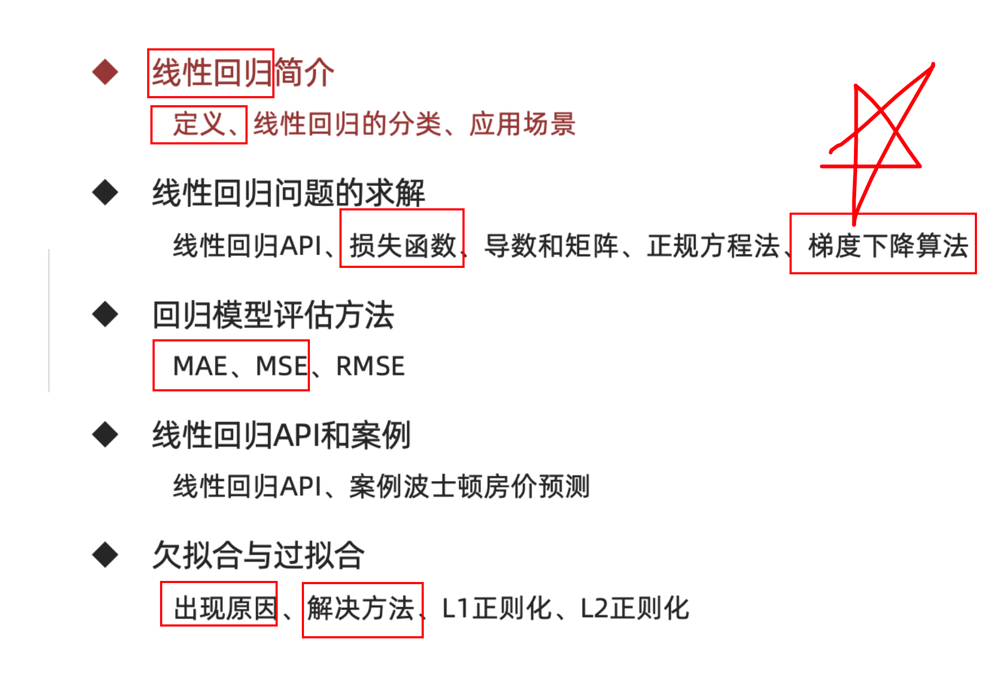
线性回归介绍
学习目标：
1.理解线性回归是什么？
2.知道一元线性回归和多元线性回归的区别
3.知道线性回归的应用场景
【理解】举个栗子
假若有了身高和体重数据，来了播仔的身高，你能预测播仔体重吗?
这是一个回归问题，该如何求解呢?
思路:先从已知身高X和体重Y中找规律，再预测
•数学问题：用一条线来拟合身高和体重之间的关系，再对新数据进行预测
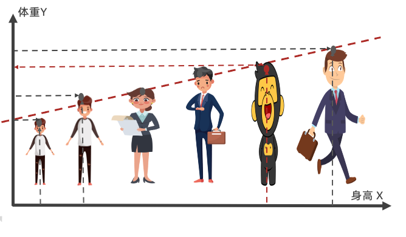
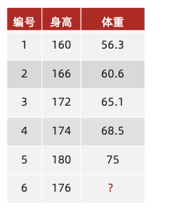
方程 Y = kX + b
k160 + b = 56.3 -- (1)
k166 + b = 60.6 –- (2)
。。。。
k: 斜率 b:截距
若：y = 0.9 x + (-93)
0.9*176 +（-93）= ?
【理解】线性回归
线性回归(Linear regression)是利用 回归方程(函数) 对 一个或多个自变量(特征值)和因变量(目标值)之间 关系进行建模的一种分析方式。
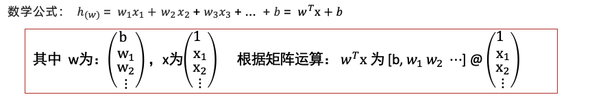
注意事项：
1 为什么叫线性模型？因为求解的w，都是w的零次幂（常数项）所以叫成线性模型
2 在线性回归中，从数据中获取的规律其实就是学习权重系数w
3 某一个权重值w越大，说明这个权重的数据对房子价格影响越大
【知道】线性回归分类
- 一元线性回归
y = kx +b
目标值只与一个因变量有关系
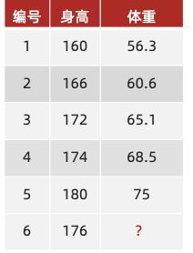
- 多元线性回归
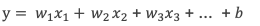
目标值只与多个因变量有关系
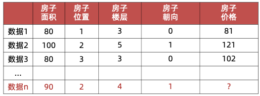
【知道】应用场景
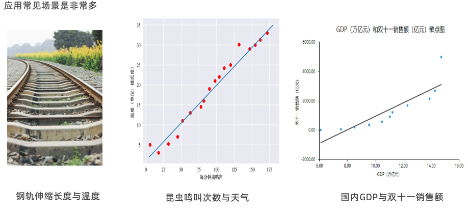
线性回归问题的求解
学习目标：
1.知道线性回归API的使用
2.知道损失函数是什么
3.复习导数和矩阵的相关内容
4.理解正规方程法
5.掌握梯度下降算法的内容
【实操】线性回归API的应用
预测播仔身高
已知数据:
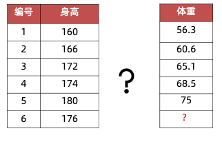
需求:播仔身高是176，请预测体重?
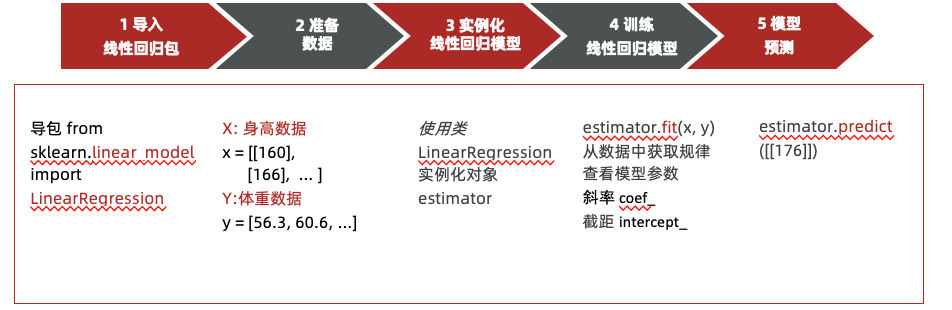
from sklearn.linear_model import LinearRegression # 身高（cm）与体重（kg）的示例数据 X = [[160], [165], [170], [175], [180]] y = [50, 55, 60, 65, 70] model = LinearRegression() model.fit(X, y) height = 176 weight = model.predict([[height]])[0] print(f"回归方程：y = {model.coef_[0]:.2f}x + {model.intercept_:.2f}") print(f"身高 {height} cm 的预测体重：{weight:.2f} kg")
通过线性回归API可快速的找到一条红色直线，是怎么求解的呢？
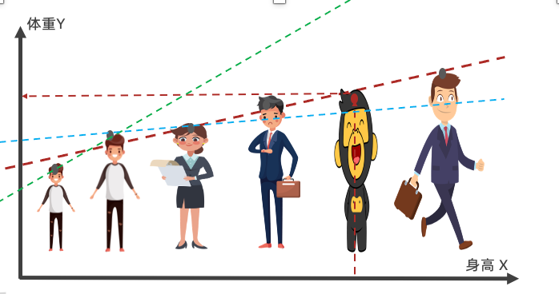
【掌握】损失函数
需要设置一个评判标准
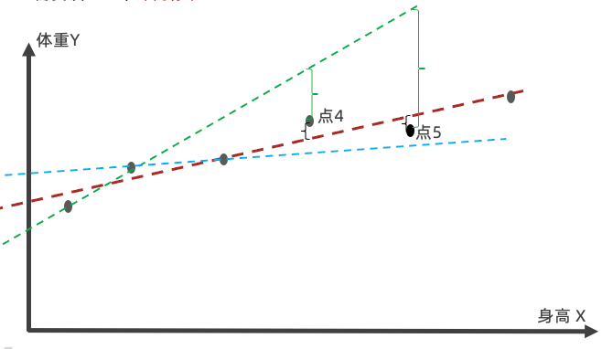
误差概念：用预测值y – 真实值y就是误差
损失函数：衡量每个样本预测值与真实值效果的函数
“红色直线能更好的拟合所有点”也就是误差最小，误差和最小
损失函数数学如何表达呢？又如何求损失函数的最小值呢？
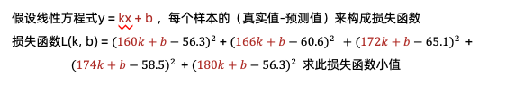
当损失函数取最小值时，得到k就是最优解
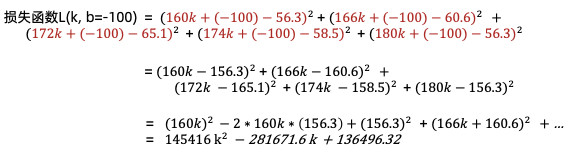
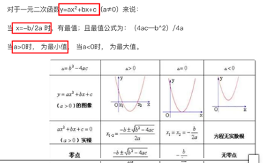
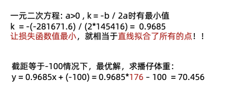
想求一条直线更好的拟合所有点 y = kx + b
-
引入损失函数(衡量预测值和真实值效果) Loss(k, b)
-
通过一个优化方法，求损失函数最小值，得到K最优解
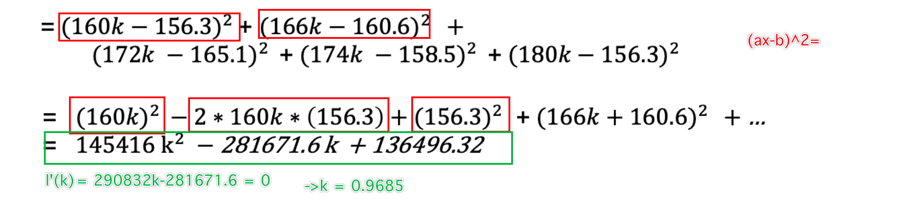
回归的损失函数：
- 均方误差 (Mean-Square Error, MSE)
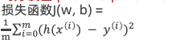
- 平均绝对误差 (Mean Absolute Error , MAE)
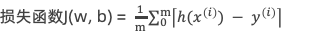
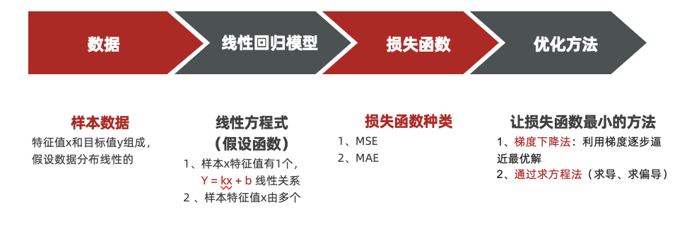
【复习】导数和矩阵
【知道】常见的数据表述
- 为什么要学习标量、向量、矩阵、张量?
- 因机器学习、深度学习中经常用，不要因是数学就害怕
- 宗旨:用到就学什么，不要盲目的展开、大篇幅学数学
- 标量scalar :一个独立存在的数，只有大小没有方向
- 向量vector :向量指一列顺序排列的元素。默认是列向量
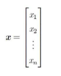
- 矩阵matrix :二维数组
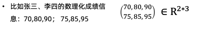
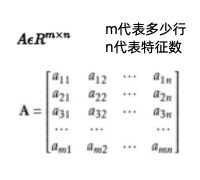
- 张量Tensor :多维数组，张量是基于向量和矩阵的推广
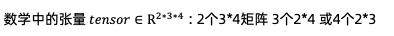
【知道】导数
当函数y=f（x）的自变量x在一点$x_0$上产生一个增量Δx时，函数输出值的增量Δy与自变量增量Δx的比值在Δx趋于0时的极限a如果存在，a即为在$x_0$处的导数，记作$f^\prime(x_0)$或df($x_0$)/dx。

导数是函数的局部性质。一个函数在某一点的导数描述了这个函数在这一点附近的变化率。
函数在某一点的导数就是该函数所代表的曲线在这一点上的切线斜率
常见函数的导数：
| 公式 | 例子 |
|---|---|
| $(C)^\prime=0$ | $\left(5\right)^\prime=0$ $\left(10\right)^\prime=0$ |
| $\left(x^\alpha\right)^\prime=\alpha x^{\alpha-1}$ | $\left(x^3\right)^\prime=3 x^{2}$ $\left(x^5\right)^\prime=5 x^{4}$ |
| $\left(a^x\right)^\prime=a^{x}\ln{a}$ | $\left(2^x\right)^\prime=2^x\ln{2}$ $\left(7^x\right)^\prime=7^x\ln{7}$ |
| $\left(e^x\right)^\prime=e^{x}$ | $\left(e^x\right)^\prime=e^{x}$ |
| $\left(\log{_a}x\right)^\prime=\frac{1}{x\ln{a}}$ | $\left(\log{{10}}x\right)^\prime=\frac{1}{x\ln{10}}$ $\left(\log{{6}}x\right)^\prime=\frac{1}{x\ln{6}}$ |
| $\left(\ln{x}\right)^\prime=\frac{1}{x}$ | $\left(\ln{x}\right)^\prime=\frac{1}{x}$ |
| $\left(\sin{x}\right)^\prime=\cos{x}$ | $\left(\sin{x}\right)^\prime=\cos{x}$ |
| $\left(\cos{x}\right)^\prime=-\sin{x}$ | $\left(\cos{x}\right)^\prime=-\sin{x}$ |
导数的四则运算：
| 公式 | 例子 |
|---|---|
| $\left[u(x)\pm v(x)\right]^\prime=u^\prime(x) \pm v^\prime(x)$ | $(e^x+4\ln{x})^\prime=(e^x)^\prime+(4\ln{x})^\prime=e^x+\frac{4}{x}$ |
| $\left[u(x)\cdot v(x)\right]^\prime=u^\prime(x) \cdot v(x) + u(x) \cdot v^\prime(x)$ | $(\sin{x}\cdot\ln{x})^\prime=\cos{x}\cdot\ln{x}+\sin{x}\cdot\frac{1}{x}$ |
| $\left[\frac{u(x)}{v(x)}\right]^\prime=\frac{u^\prime(x) \cdot v(x) - u(x) \cdot v^\prime(x)}{v^2(x)}$ | $\left(\frac{e^x}{\cos{x}}\right)^\prime=\frac{e^x\cdot\cos{x}-e^x\cdot(-\sin{x})}{cos^2(x)}$ |
| ${g[h(x)]}^\prime=g^\prime(h)*h^\prime(x)$ | $(\sin{2x})^\prime=\cos{2x}\cdot(2x)^\prime=2\cos(2x)$ |
复合函数求导：g(h)是外函数 h(x)是内函数。先对外函数求导，再对内函数求导
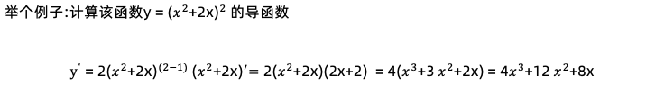
导数求极值：
导数为0的位置是函数的极值点
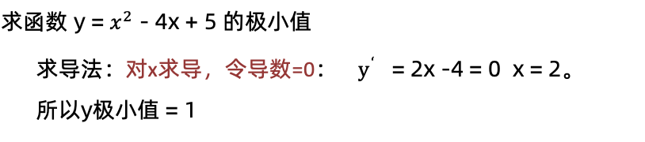
【知道】偏导
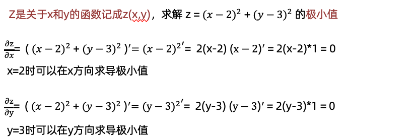
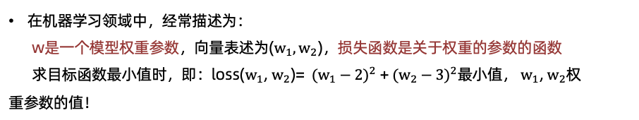
【知道】向量
向量运算：
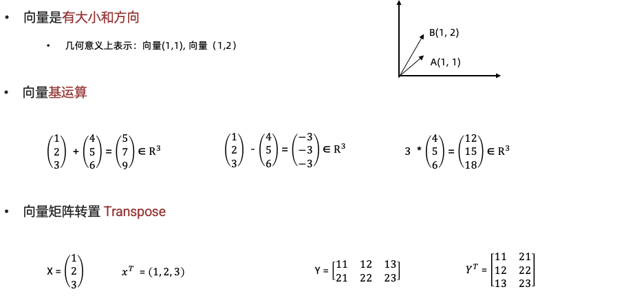
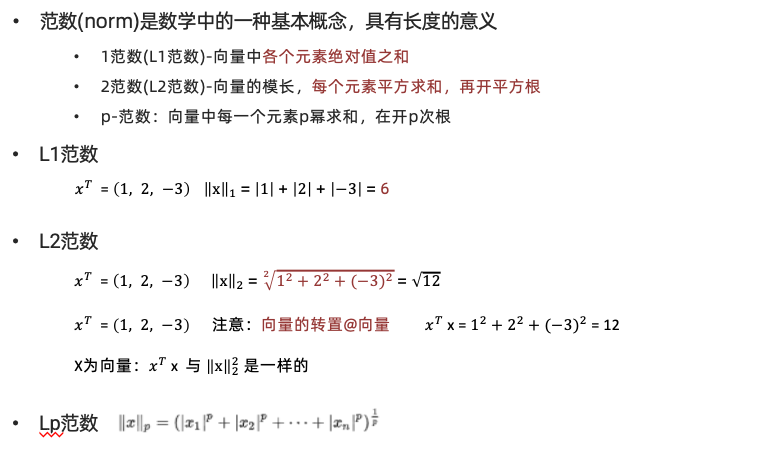
【知道】矩阵
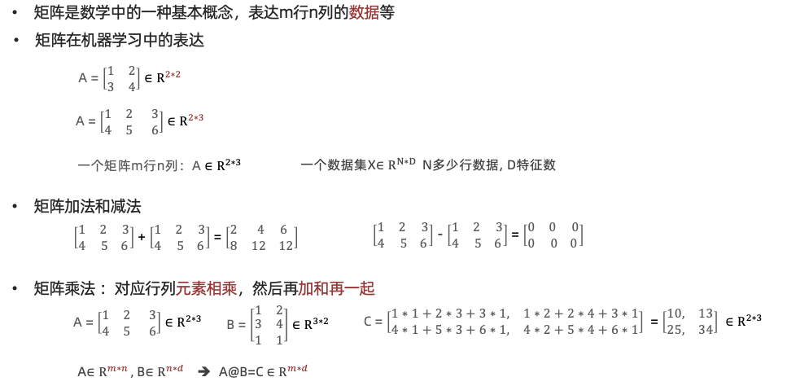
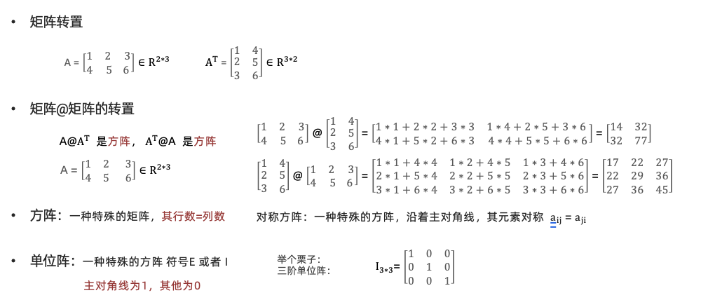
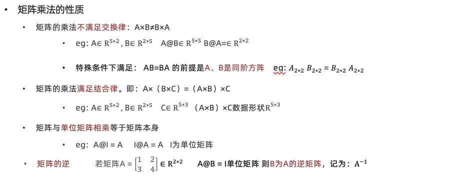
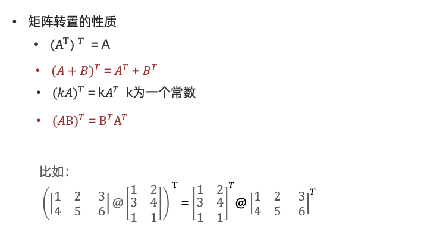
【了解】一元线性回归的解析解
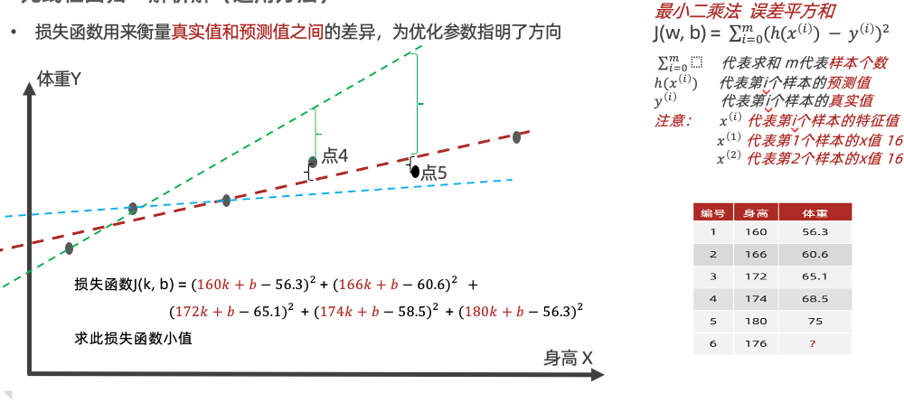
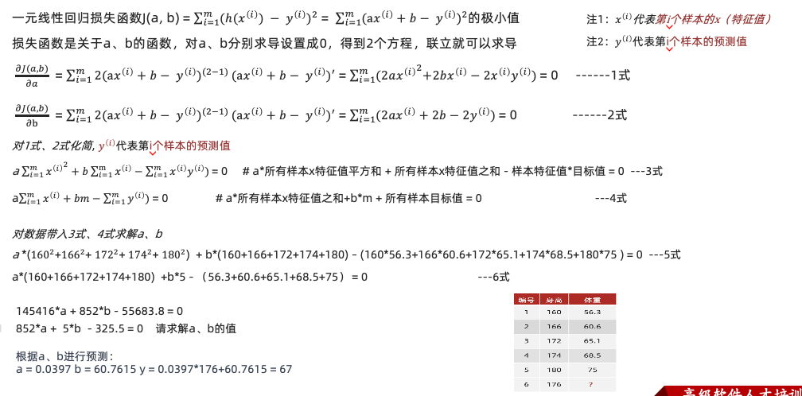
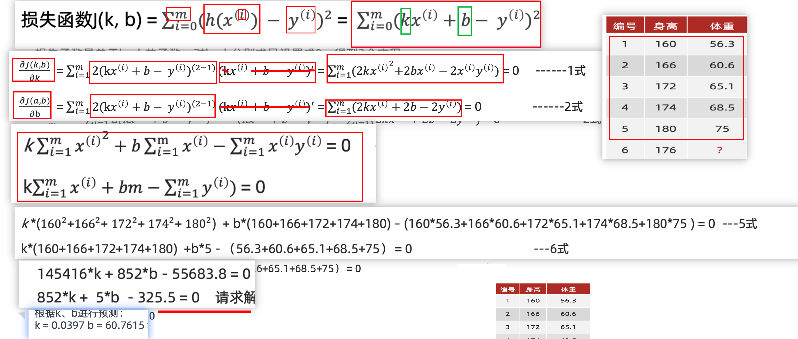
【了解】多元线性回归的解析解-正规方程法
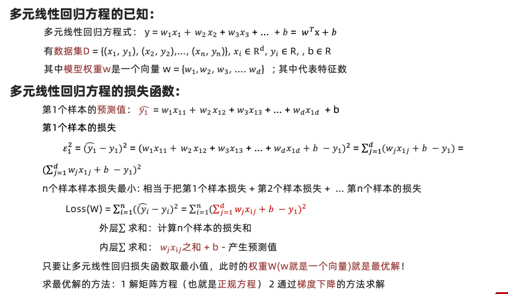
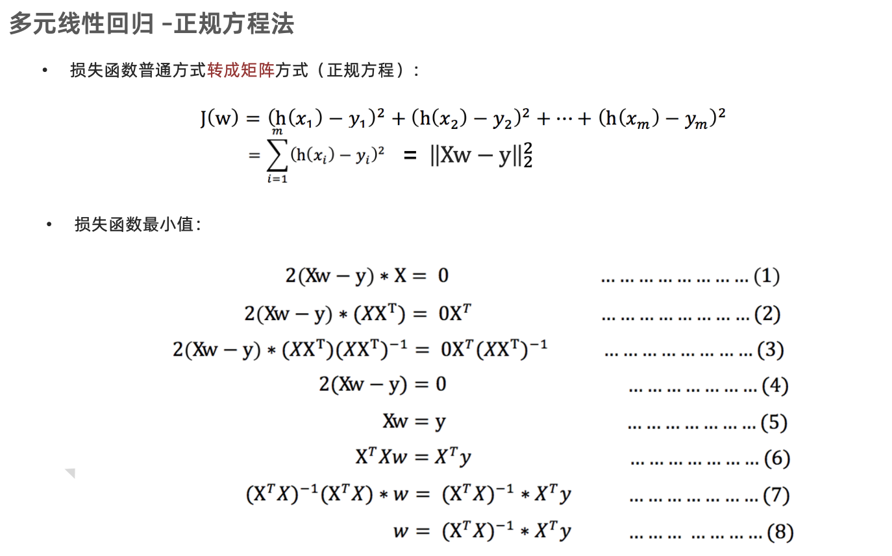
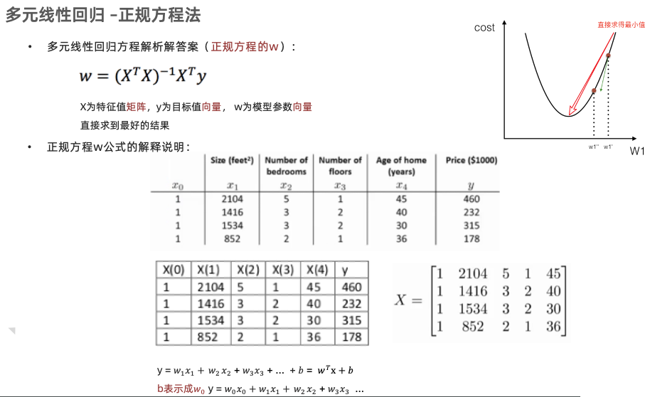
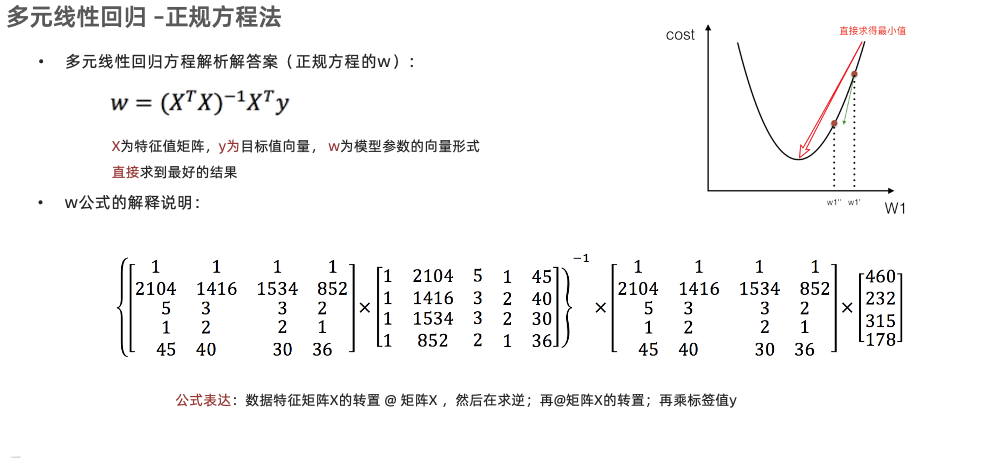
梯度下降算法
【掌握】梯度下降算法思想
什么是梯度下降法
• 求解函数极值还有更通用的方法就是梯度下降法。顾名思义:沿着梯度下降的方向求解极小值 • 举个例子:坡度最陡下山法
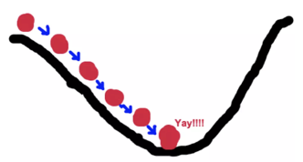
- 输入:初始化位置S;每步距离为a 。输出:从位置S到达山底
- 步骤1:令初始化位置为山的任意位置S
- 步骤2:在当前位置环顾四周，如果四周都比S高返回S;否则执行步骤3
- 步骤3: 在当前位置环顾四周，寻找坡度最陡的方向，令其为x方向
- 步骤4:沿着x方向往下走，长度为a，到达新的位置S‘
- 步骤5:在S‘位置环顾四周，如果四周都比S‘高，则返回S‘。否则转到步骤3
小结:通过循环迭代的方法不断更新位置S (相当于不断更新权重参数w)
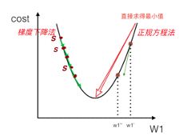
最终找到最优解 这个方法可用来求损失函数最优解， 比正规方程更通用
梯度下降过程就和下山场景类似 可微分的损失函数，代表着一座山 寻找的函数的最小值，也就是山底
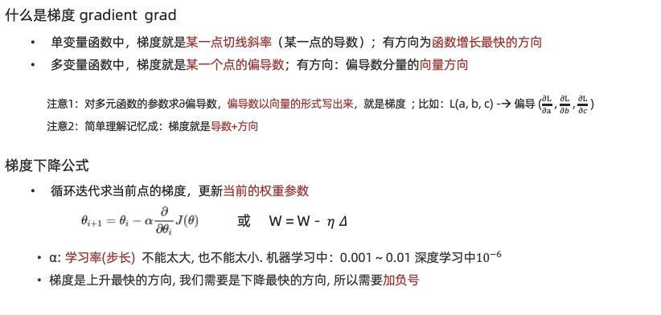
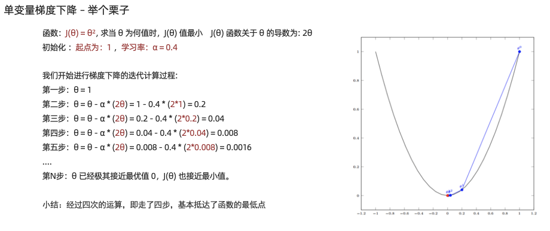
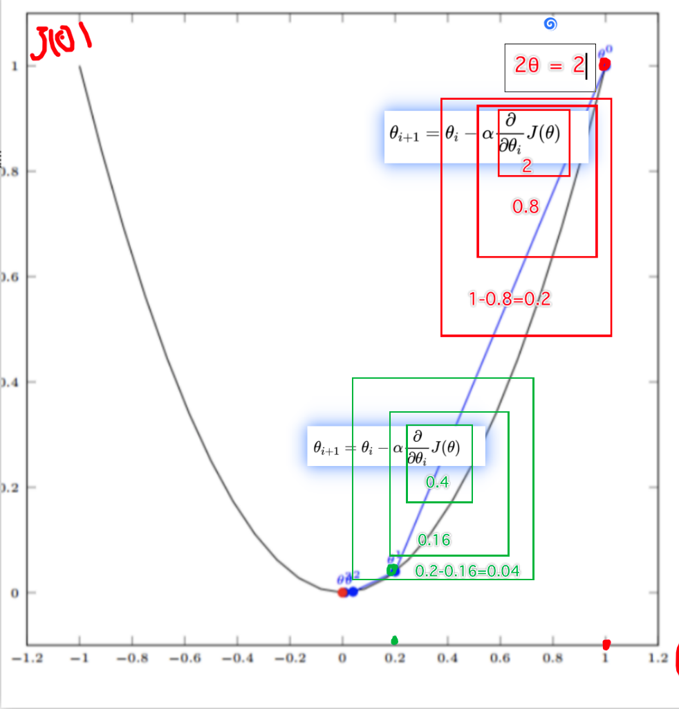
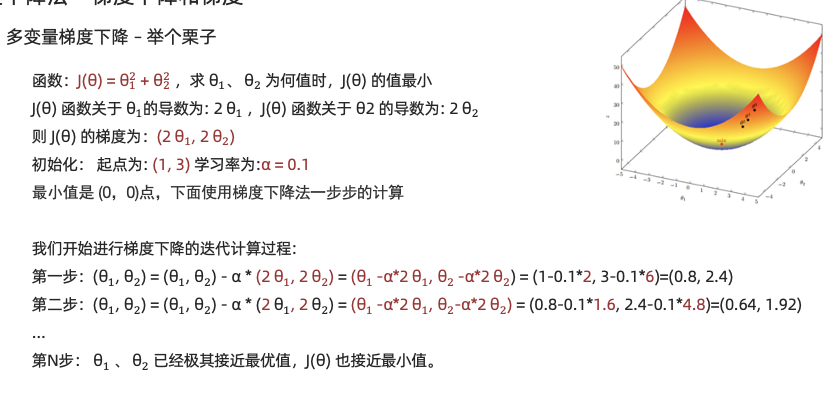
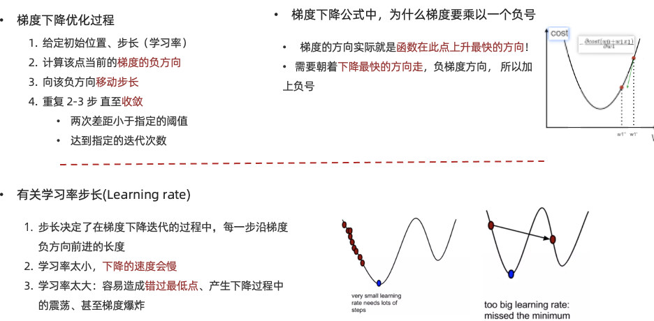
【理解】银行信贷案例
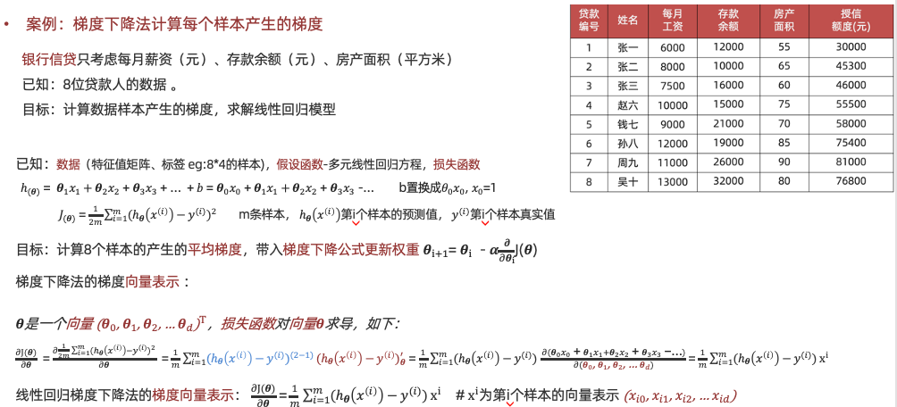
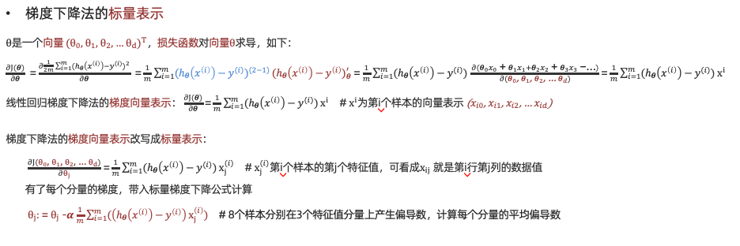
【了解】梯度下降算法分类
【理解】正规方程和梯度下降算法的对比
回归评估方法
学习目标：
1.掌握常用的回归评估方法
2.了解不同评估方法的特点
为什么要进行线性回归模型的评估
我们希望衡量预测值和真实值之间的差距，
会用到MAE、MSE、RMSE多种测评函数进行评价
【知道】平均绝对误差
Mean Absolute Error (MAE)
-
上面的公式中：n 为样本数量, y 为实际值, $\hat{y}$ 为预测值
-
MAE 越小模型预测约准确
Sklearn 中MAE的API
from sklearn.metrics import mean_absolute_error mean_absolute_error(y_test,y_predict)
【知道】均方误差
Mean Squared Error (MSE)
- 上面的公式中：n 为样本数量, y 为实际值, $\hat{y}$ 为预测值
- MSE 越小模型预测约准确
Sklearn 中MSE的API
from sklearn.metrics import mean_squared_error mean_squared_error(y_test,y_predict)
【知道】 均方根误差
Root Mean Squared Error (RMSE)
- 上面的公式中：n 为样本数量, y 为实际值, $\hat{y}$ 为预测值
- RMSE 越小模型预测约准确
【了解】 三种指标的比较
我们绘制了一条直线 y = 2x +5 用来拟合 y = 2x + 5 + e. 这些数据点，其中e为噪声
从上图中我们发现 MAE 和 RMSE 非常接近，都表明模型的误差很低（MAE 或 RMSE 越小，误差越小！）。 但是MAE 和 RMSE 有什么区别？为什么MAE较低？
-
对比MAE 和 RMSE的公式，RMSE的计算公式中有一个平方项，因此：大的误差将被平方，因此会增加 RMSE 的值
-
可以得出结论，RMSE 会放大预测误差较大的样本对结果的影响，而 MAE 只是给出了平均误差
-
由于 RMSE 对误差的 平方和求平均 再开根号，大多数情况下RMSE>MAE
举例 (1+3)/2 = 2 $\sqrt{(1^2+3^2)/2 }= \sqrt{10/2} = \sqrt{5} = 2.236$
我们再看下一个例子
橙色线与第一张图中的直线一样：y = 2x +5
蓝色的点为： y = y + sin(x)*exp(x/20) + e 其中 exp() 表示指数函数
我们看到对比第一张图，所有的指标都变大了，RMSE 几乎是 MAE 值的两倍，因为它对预测误差较大的点比较敏感
我们是否可以得出结论： RMSE是更好的指标？ 某些情况下MAE更有优势，例如：
- 假设数据中有少数异常点偏差很大，如果此时根据 RMSE 选择线性回归模型，可能会选出过拟合的模型来
- 在这种情况下，由于数据中的异常点极少，选择具有最低 MAE 的回归模型可能更合适
- 除此之外，当两个模型计算RMSE时数据量不一致，也不适合在一起比较
【实操】波士顿房价预测案例
【知道】线性回归API
sklearn.linear_model.LinearRegression(fit_intercept=True)
- 通过正规方程优化
- 参数：fit_intercept，是否计算偏置
- 属性：LinearRegression.coef_ （回归系数） LinearRegression.intercept_（偏置）
sklearn.linear_model.SGDRegressor(loss="squared_loss", fit_intercept=True, learning_rate ='constant', eta0=0.01)
- 参数：loss（损失函数类型），fit_intercept（是否计算偏置）learning_rate （学习率）
- 属性：SGDRegressor.coef_ （回归系数）SGDRegressor.intercept_ （偏置）
【实操】波士顿房价预测
案例背景介绍
数据介绍
给定的这些特征，是专家们得出的影响房价的结果属性。我们此阶段不需要自己去探究特征是否有用，只需要使用这些特征。到后面量化很多特征需要我们自己去寻找
案例分析
回归当中的数据大小不一致，是否会导致结果影响较大。所以需要做标准化处理。
- 数据分割与标准化处理
- 回归预测
- 线性回归的算法效果评估
回归性能评估
均方误差(Mean Squared Error, MSE)评价机制：
$\Large MSE = \frac{1}{m}\sum_{i=1}^{m}(y^i-\hat{y})^2$
sklearn中的API：sklearn.metrics.mean_squared_error(y_true, y_pred)
- 均方误差回归损失
- y_true:真实值
- y_pred:预测值
- return:浮点数结果
代码实现
''' 多元线性归回之波士顿房价预测 利用sklearn 的正规方程解法以及梯度下降法 步骤 1 获取数据 2 数据集划分 3 数据预处理-标准化 4 机器学习方法 （1正规方程法 不求逆矩阵，用奇异值分解SVD 2 梯度下降） 5 模型测试 获取模型参数 6 模型评估 ''' #导包 import pandas as pd from sklearn.preprocessing import StandardScaler # 特征标准化 from sklearn.model_selection import train_test_split # 数据集划分 from sklearn.linear_model import LinearRegression # 回归模型API from sklearn.linear_model import SGDRegressor # 梯度下降的回归模型 from sklearn.metrics import mean_squared_error # 均方误差评估 # 正规方程 def linear_model1(): # 1 获取数据 path = r'data/boston.csv' df = pd.read_csv(path) # 2 数据集划分为特征和标签 data = df.iloc[:, :-1] # 所有列除了最后一列 label = df.iloc[:, -1] # 最后一列 # 打印信息 print(data.shape, label.shape) #特征是二维数据，n行:n个样本 d列:d个特征 print(data) print(label) # 2 数据集划分 # 参1 数据集 参2 标签 参3 测试集所占比例 参4 是否打乱数据集 参5 随机数种子 x_train, x_test, y_train, y_test = train_test_split(data,label, test_size=0.2, shuffle=True, random_state=22) # 3 特征工程-标准化 transfer = StandardScaler() # 数据集预处理-数据标准化 fit + transform 记录均值方差 针对训练集 x_train = transfer.fit_transform(x_train) # 让测试集的均值和方差, 转换测试集数据; 仅仅transform 针对测试集 x_test = transfer.transform(x_test) # 4 机器学习-线性回归(正规方程法 + 奇异值分解) estimator = LinearRegression() estimator.fit(x_train, y_train) # 5 模型评估 # 获取模型系数 y_predict = estimator.predict(x_test) print("预测值为:\n", y_predict) print("模型的权重系数为:\n", estimator.coef_) print("模型的偏置为:\n", estimator.intercept_) # 5.2 评价 均方误差 error = mean_squared_error(y_test, y_predict) print("误差为:\n", error) #梯度下降方式 def linear_model2(): path = r'data/boston.csv' df = pd.read_csv(path) # 2 数据集划分为特征和标签 data = df.iloc[:, :-1] # 所有列除了最后一列 label = df.iloc[:, -1] # 最后一列 # 2 数据集划分 # 参1 数据集 参2 标签 参3 测试集所占比例 参4 是否打乱数据集 参5 随机数种子 x_train, x_test, y_train, y_test = train_test_split(data, label, test_size=0.2, shuffle=True, random_state=22) # 3.特征工程-标准化 transfer = StandardScaler() x_train = transfer.fit_transform(x_train) x_test = transfer.transform(x_test) # 4.机器学习-线性回归(梯度下降) estimator = SGDRegressor(learning_rate='invscaling', eta0=0.01) # estimator = SGDRegressor(max_iter=1000, learning_rate="constant", eta0=0.001) estimator.fit(x_train, y_train) '''性能会略差，因为之前是理论计算值''' # 5.模型评估 # 5.1 获取模型参数 y_predict = estimator.predict(x_test) print("预测值为:\n", y_predict) print("模型的权重系数为:\n", estimator.coef_) print("模型的偏置为:\n", estimator.intercept_) print('模型实际跑了多少轮：', estimator.n_iter_) # 5.2 评价 均方误差 error = mean_squared_error(y_test, y_predict) print("误差为:\n", error) if __name__ == "__main__": linear_model1() linear_model2()
1.2.0 以上版本实现
import pandas as pd from sklearn.linear_model import LinearRegression from sklearn.metrics import mean_squared_error from sklearn.model_selection import train_test_split from sklearn.pipeline import make_pipeline from sklearn.preprocessing import StandardScaler # 新版 sklearn 已移除 load_boston，这里直接读取课程配套 CSV df = pd.read_csv("data/boston.csv") X = df.drop(columns="medv") y = df["medv"] X_train, X_test, y_train, y_test = train_test_split( X, y, test_size=0.2, random_state=42 ) model = make_pipeline(StandardScaler(), LinearRegression()) model.fit(X_train, y_train) y_pred = model.predict(X_test) print("测试集 MSE：", mean_squared_error(y_test, y_pred)) print("测试集 R²：", model.score(X_test, y_test))
正则化
学习目标：
1.掌握过拟合、欠拟合的概念
2.掌握过拟合、欠拟合产生的原因
3.知道什么是正则化，以及正则化的方法
【理解】 欠拟合与过拟合
过拟合：一个假设 在训练数据上能够获得比其他假设更好的拟合， 但是在测试数据集上却不能很好地拟合数据 (体现在准确率下降)，此时认为这个假设出现了过拟合的现象。(模型过于复杂)
欠拟合：一个假设 在训练数据上不能获得更好的拟合，并且在测试数据集上也不能很好地拟合数据 ，此时认为这个假设出现了欠拟合的现象。(模型过于简单)
过拟合和欠拟合的区别：
欠拟合在训练集和测试集上的误差都较大
过拟合在训练集上误差较小，而测试集上误差较大
【实践】通过代码认识过拟合和欠拟合
绘制数据
# -*- coding: utf-8 -*- ''' 演示： 拟合问题 回顾： 拟合：指的是模型和数据之前存在关系， 即：预测值和真实值之间的关系 欠拟合：模型在训练集、测试集表现都不好 原因：模型（特征太少）太简单了 过拟合：模型在训练集表现好，在测试集表现不好 原因：模型（特征太多）过于复杂了 数据不纯、数据量少 正好拟合（泛化）：模型在训练集，测试集都好 奥卡姆剃刀：在误差相同（泛化程度一样）的情况下，优先选择简单的模型 步骤： 1 准备数据x y(增加上噪声) 2 实例化线性回归模型 3 训练模型 4 模型预测 5 计算误差 ''' import numpy as np import matplotlib.pyplot as plt from sklearn.linear_model import LinearRegression # 梯度下降的回归模型 from sklearn.metrics import mean_squared_error # 计算均方误差 from sklearn.preprocessing import StandardScaler def dm01_underfitting(): # 1 准备数据x y(增加上噪声) # 锁定随机数种子 np.random.seed(666) # 产生100个随机数 （100个特征值） x = np.random.uniform(-3, 3, size=100) #得到标签 2次幂的映射 y = 0.5 * x ** 2 + x + 2 # 增加标签噪声 --> 模拟真实数据 y += np.random.normal(0, 1, size=100) #plt.scatter(x,y) #plt.show() # 2 实例化线性回归模型 estimator = LinearRegression() # 3 训练模型 X = x.reshape(-1, 1) # 将特征转为n行1列 ！ n个样本 1个特征 print('X.shape-->', X.shape) # 训练 ''' 仅有的一列特征作为输入, 即X ， y = wx + b 导致欠拟合 ''' estimator.fit(X, y) # 4 模型预测 y_predict = estimator.predict(X) # 5 计算均方误差 myret = mean_squared_error(y, y_predict) print('myret-->', myret) # 3.0750025765636577 # 6 画图 plt.scatter(x, y) plt.plot(x, y_predict,color='r') # 不连线 # 画图plot折线图时 需要对x进行排序, 取x排序后对应的y值 '''重点讲解，需要画图说明''' #plt.plot(np.sort(x), y_predict[np.argsort(x)], color='r') plt.show() def dm02_justfitting(): # 略写 # 1 准备数据x y(增加上噪声) np.random.seed(666) x = np.random.uniform(-3, 3, size=100) '''演示 如果不排序， 画图不正常''' x=np.sort(x) y = 0.5 * x ** 2 + x + 2 + np.random.normal(0, 1, size=100) # 2 实例化线性回归模型 estimator = LinearRegression() # 3 训练模型 # 转为 n行 1列 X = x.reshape(-1, 1) # print(‘X.shape-->’, X.shape) # 特征名 x x² #样本1 1.3 1.69 #样本2 0.5 0.25 #样本3 1.1 1.21 # ... #增加第二列特征 平方项， 其特征值是 x 特征值的平方 ''' 输入的特征2列， 模型参数增加，避免过拟合 y = w1 x + w2 x² + b 正好拟合 ''' X2 = np.hstack([X, X ** 2]) # 训练 estimator.fit(X2, y) # 4 模型预测 y_predict = estimator.predict(X2) # 5 计算均方误差 myret = mean_squared_error(y, y_predict) print('myret-->', myret) # 1.093798773963645 # 6 画图 plt.scatter(x, y) plt.plot(x, y_predict,color='r') # 不连线 # 画图plot折线图时 需要对x进行排序, 取x排序后对应的y值 #plt.plot(np.sort(x), y_predict[np.argsort(x)], color='r') plt.show() def dm03_overfitting(): # 略写 # 1 准备数据x y(增加上噪声) np.random.seed(666) x = np.random.uniform(-3, 3, size=100) '''演示 如果不排序， 画图不正常''' x=np.sort(x) y = 0.5 * x ** 2 + x + 2 + np.random.normal(0, 1, size=100) # 2 实例化线性回归模型 estimator = LinearRegression() # 3 训练模型 X = x.reshape(-1, 1) # print(‘X.shape-->’, X.shape) # 特征名 x x² x³ x⁴ x⁵ x⁶ x⁷ x⁸ x⁹ x¹⁰ #样本1 1.3 1.69 2.2 2.86 3.71 4.83 6.27 8.16 10.6 13.79 #样本2 1.1 1.21 1.33 1.46 1.61 1.77 1.95 2.14 2.36 2.59 #样本3 0.5 0.25 0.13 0.06 0.03 0.02 0.01 ... # ... '''特征太多， 模型参数过多 y = w1x1 + w2x² +w3x³ + ... w10x^10 + b''' # 增加特征， 高次项 X3 = np.hstack([X, X**2, X**3, X**4, X**5, X**6, X**7, X**8, X**9, X**10]) ''' 尝试更多的特征？ x**30 ？ 或者更小的数据弥散 ？ σ=0.2 ？ ''' '''X3 = np.hstack([X**(i+1) for i in range(40)]) ''' print(X3.shape) # 每个特征的量纲不一样， 需要标准化 from sklearn.preprocessing import StandardScaler scalar = StandardScaler() X3 = scalar.fit_transform(X3) # 训练 estimator.fit(X3, y) # 4 模型预测 y_predict = estimator.predict(X3) # 5 计算均方误差 myret = mean_squared_error(y, y_predict) print('myret-->', myret) # 0.9530293790558859 # 查看权重 print(estimator.coef_) ''' [4.09240017 2.49296294 -21.35688901 -5.30682997 63.10014981 10.87454772 -71.7709558 -10.87776102 27.82629309 4.25436815] 证明 高阶特征也被重视。 后期用了正则，效果立杆见影 ''' # 6 画图 plt.scatter(x, y) plt.plot(x, y_predict,color='r') # 不连线 # 画图plot折线图时 需要对x进行排序, 取x排序后对应的y值 '''重点讲解，需要画图说明''' #plt.plot(np.sort(x), y_predict[np.argsort(x)], color='r') plt.show() if __name__ == '__main__': dm01_underfitting() dm02_justfitting() dm03_overfitting()
#计算均方误差 from sklearn.metrics import mean_squared_error mean_squared_error(y,y_predict) #3.0750025765636577
添加二次项，绘制图像
import matplotlib.pyplot as plt import numpy as np from sklearn.linear_model import LinearRegression from sklearn.metrics import mean_squared_error from sklearn.preprocessing import PolynomialFeatures rng = np.random.default_rng(42) x = np.linspace(-3, 3, 50) y = 0.5 * x**2 + x + 2 + rng.normal(0, 0.8, len(x)) X = x.reshape(-1, 1) poly = PolynomialFeatures(degree=2, include_bias=False) X_poly = poly.fit_transform(X) model = LinearRegression().fit(X_poly, y) y_pred = model.predict(X_poly) print("二次模型 MSE：", mean_squared_error(y, y_pred)) plt.scatter(x, y, label="samples") plt.plot(x, y_pred, color="tomato", label="degree=2") plt.legend() plt.show()
#计算均方误差和准确率 from sklearn.metrics import mean_squared_error mean_squared_error(y,y_predict2) #1.0987392142417858
再次加入高次项，绘制图像，观察均方误差结果
import matplotlib.pyplot as plt import numpy as np from sklearn.linear_model import LinearRegression from sklearn.metrics import mean_squared_error from sklearn.pipeline import make_pipeline from sklearn.preprocessing import PolynomialFeatures, StandardScaler rng = np.random.default_rng(42) x = np.linspace(-3, 3, 50) y = 0.5 * x**2 + x + 2 + rng.normal(0, 0.8, len(x)) X = x.reshape(-1, 1) # 阶数过高时，模型会追逐训练集中的噪声 model = make_pipeline( PolynomialFeatures(degree=15, include_bias=False), StandardScaler(), LinearRegression(), ) model.fit(X, y) x_plot = np.linspace(-3, 3, 500).reshape(-1, 1) y_plot = model.predict(x_plot) print("15 次模型训练 MSE：", mean_squared_error(y, model.predict(X))) plt.scatter(x, y, label="samples") plt.plot(x_plot[:, 0], y_plot, color="tomato", label="degree=15") plt.ylim(y.min() - 3, y.max() + 3) plt.legend() plt.show()
通过上述观察发现，随着加入的高次项越来越多，拟合程度越来越高，均方误差也随着加入越来越小。说明已经不再欠拟合了。
问题：如何判断出现过拟合呢？
将数据集进行划分：对比X、X2、X5的测试集的均方误差
X的测试集均方误差
X_train,X_test,y_train,y_test = train_test_split(X,y,random_state = 5) estimator = LinearRegression() estimator.fit(X_train,y_train) y_predict = estimator.predict(X_test) mean_squared_error(y_test,y_predict) #3.153139806483088
X2的测试集均方误差
X_train,X_test,y_train,y_test = train_test_split(X2,y,random_state = 5) estimator = LinearRegression() estimator.fit(X_train,y_train) y_predict = estimator.predict(X_test) mean_squared_error(y_test,y_predict) #1.111873885731967
X5的测试集的均方误差
X_train,X_test,y_train,y_test = train_test_split(X5,y,random_state = 5) estimator = LinearRegression() estimator.fit(X_train,y_train) y_predict = estimator.predict(X_test) mean_squared_error(y_test,y_predict) #1.4145580542309835
【理解】 原因以及解决办法
欠拟合产生原因： 学习到数据的特征过少
解决办法：
1）添加其他特征项，有时出现欠拟合是因为特征项不够导致的，可以添加其他特征项来解决
2）添加多项式特征，模型过于简单时的常用套路，例如将线性模型通过添加二次项或三次项使模型泛化能力更强
过拟合产生原因： 原始特征过多，存在一些嘈杂特征， 模型过于复杂是因为模型尝试去兼顾所有测试样本
解决办法：
1）重新清洗数据，导致过拟合的一个原因有可能是数据不纯，如果出现了过拟合就需要重新清洗数据。
2）增大数据的训练量，还有一个原因就是我们用于训练的数据量太小导致的，训练数据占总数据的比例过小。
3）正则化
4）减少特征维度
【理解】正则化
在解决回归过拟合中，我们选择正则化。但是对于其他机器学习算法如分类算法来说也会出现这样的问题，除了一些算法本身作用之外（决策树、神经网络），我们更多的也是去自己做特征选择，包括之前说的删除、合并一些特征
如何解决？
在学习的时候，数据提供的特征有些影响模型复杂度或者这个特征的数据点异常较多，所以算法在学习的时候尽量减少这个特征的影响（甚至删除某个特征的影响），这就是正则化
注：调整时候，算法并不知道某个特征影响，而是去调整参数得出优化的结
L1正则化
- 假设𝐿(𝑊)是未加正则项的损失，𝜆是一个超参，控制正则化项的大小。
- 则最终的损失函数：$𝐿=𝐿(𝑊)+ \lambda*\sum_{i=1}^{n}\lvert w_i\rvert$
作用：用来进行特征选择，主要原因在于L1正则化会使得较多的参数为0，从而产生稀疏解,可以将0对应的特征遗弃，进而用来选择特征。一定程度上L1正则也可以防止模型过拟合。
L1正则为什么可以产生稀疏解（可以特征选择）
稀疏性：向量中很多维度值为0
- 对其中的一个参数 $ w_i $ 计算梯度，其他参数同理，α是学习率，sign(wi)是符号函数。
L1的梯度：
$𝐿=𝐿(𝑊)+ \lambda*\sum_{i=1}^{n}\lvert w_i\rvert$
$\frac{\partial L}{\partial w_{i}} = \frac{\partial L(W)}{\partial w_{i}}+\lambda sign(w_{i})$
LASSO回归: from sklearn.linear_model import Lasso
L2正则化
- 假设𝐿(𝑊)是未加正则项的损失，𝜆是一个超参，控制正则化项的大小。
- 则最终的损失函数：$𝐿=𝐿(𝑊)+ \lambda*\sum_{i=1}^{n}w_{i}^{2}$
作用：主要用来防止模型过拟合，可以减小特征的权重
优点：越小的参数说明模型越简单，越简单的模型则越不容易产生过拟合现象
Ridge回归: from sklearn.linear_model import Ridge
正则化案例
''' 展示L1 L2正则化的作用 1 准备数据x y(增加上噪声) 2 实例化L1正则化模型 3 训练模型 4 训练预测 5 计算均方误差 6 画图 ''' #导包 import numpy as np import matplotlib.pyplot as plt #from sklearn.linear_model import LinearRegression from sklearn.metrics import mean_squared_error # 计算均方误差 from sklearn.linear_model import Lasso # L1正则 from sklearn.linear_model import Ridge # L2 正则 from sklearn.preprocessing import StandardScaler '''接着过拟合的代码 少量修改''' def dm04_L1regualization(): # 1 准备数据x y(增加上噪声) np.random.seed(666) x = np.random.uniform(-3, 3, size=100) x = np.sort(x) y = 0.5 * x ** 2 + x + 2 + np.random.normal(0, 1, size=100) # 2 实例化L1正则化模型 做实验:alpha惩罚力度越来越大k值越来越小,反而会欠拟合 # 某些权重为 -5 -6 次方 接近0 estimator = Lasso(alpha=0.005) # 3 训练模型 X = x.reshape(-1, 1) # 数据增加新特征 ， 高次项 X3 = np.hstack([X, X ** 2, X ** 3, X ** 4, X ** 5, X ** 6, X ** 7, X ** 8, X ** 9, X ** 10]) # 每个特征的量纲不一样， 需要标准化 scalar = StandardScaler() X3 = scalar.fit_transform(X3) estimator.fit(X3, y) # 打印模型系数 发现高阶特征的的权重大幅萎缩，有些为0 print('estimator.coef_', estimator.coef_) '''[ 1.29859891 1.49281832 1.05248659 -0.09780303 0. -0. -0. 0. -0.55154167 0.03318437] 许多零值 其余的萎缩 ''' # 4 模型预测 y_predict = estimator.predict(X3) # 5 计算均方误差 myresult = mean_squared_error(y, y_predict) print('myresult-->', myresult) # 1.050917863506633 # 6 画图 plt.scatter(x, y) # 画图时输入的x数据: 要求是从小到大 #plt.plot(np.sort(x), y_predict[np.argsort(x)], color='r') plt.plot(x,y_predict, color='r') plt.show() def dm05_L2regualization(): # 1 准备数据x y(增加上噪声) np.random.seed(666) x = np.random.uniform(-3, 3, size=100) x = np.sort(x) y = 0.5 * x ** 2 + x + 2 + np.random.normal(0, 1, size=100) # 2 实例化L2正则化模型 estimator = Ridge(alpha=0.005) # 3 训练模型 X = x.reshape(-1, 1) X3 = np.hstack([X, X ** 2, X ** 3, X ** 4, X ** 5, X ** 6, X ** 7, X ** 8, X ** 9, X ** 10]) # 数据增加二次项 # 每个特征的量纲不一样， 需要标准化 scalar = StandardScaler() X3 = scalar.fit_transform(X3) estimator.fit(X3, y) # 打印模型系数 发现高阶特征 的 权重仅衰减 print('estimator.coef_', estimator.coef_) ''' [ 1.97793804 1.84606472 -3.46811099 -0.51157252 10.01059977 -0.13776927 -8.43148067 -0.59689086 1.71595026 0.85738089] 权重萎缩''' # 4 模型预测 y_predict = estimator.predict(X3) # 5 计算均方误差 myresult = mean_squared_error(y, y_predict) print('myresult-->', myresult) # 1.012414860990333 # 6 画图 plt.scatter(x, y) # 画图时输入的x数据: 要求是从小到大 #plt.plot(np.sort(x), y_predict[np.argsort(x)], color='r') plt.plot(x,y_predict, color='r') plt.show() if __name__ == '__main__': dm04_L1regualization() dm05_L2regualization()
import numpy as np from sklearn.linear_model import Lasso, LinearRegression, Ridge from sklearn.metrics import mean_squared_error from sklearn.preprocessing import PolynomialFeatures, StandardScaler rng = np.random.default_rng(42) x = np.linspace(-3, 3, 80) y = 0.5 * x**2 + x + 2 + rng.normal(0, 1.0, len(x)) X = PolynomialFeatures(degree=12, include_bias=False).fit_transform( x.reshape(-1, 1) ) X = StandardScaler().fit_transform(X) models = { "无正则": LinearRegression(), "Ridge(L2)": Ridge(alpha=1.0), "Lasso(L1)": Lasso(alpha=0.03, max_iter=20_000), } for name, model in models.items(): model.fit(X, y) zero_count = np.count_nonzero(np.isclose(model.coef_, 0)) mse = mean_squared_error(y, model.predict(X)) print(f"{name:10s} MSE={mse:.3f}，零系数={zero_count}")
import numpy as np from sklearn.linear_model import Lasso, Ridge from sklearn.model_selection import GridSearchCV, KFold from sklearn.pipeline import make_pipeline from sklearn.preprocessing import PolynomialFeatures, StandardScaler rng = np.random.default_rng(42) x = np.linspace(-3, 3, 80) y = 0.5 * x**2 + x + 2 + rng.normal(0, 1.0, len(x)) X = PolynomialFeatures(degree=12, include_bias=False).fit_transform( x.reshape(-1, 1) ) alphas = np.logspace(-3, 2, 60) cv = KFold(n_splits=5, shuffle=True, random_state=42) lasso = GridSearchCV( make_pipeline(StandardScaler(), Lasso(max_iter=100_000)), {"lasso__alpha": alphas}, cv=cv, scoring="neg_mean_squared_error", ).fit(X, y) ridge = GridSearchCV( make_pipeline(StandardScaler(), Ridge()), {"ridge__alpha": alphas}, cv=cv, scoring="neg_mean_squared_error", ).fit(X, y) print("Lasso 最佳 alpha：", lasso.best_params_["lasso__alpha"]) print("Ridge 最佳 alpha：", ridge.best_params_["ridge__alpha"])
作业
1.完成线性回归部分的思维导图
2.描述梯度下降算法思想，自己推导银行信贷的案例
3.说明欠拟合和过拟合的相关内容
3.使用L1和L2正则化方法实现波士顿房价预测